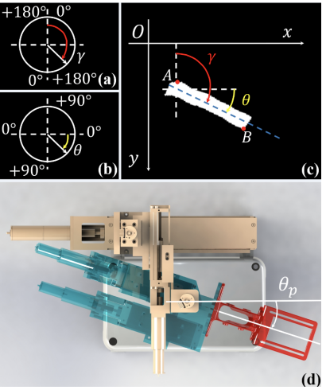

Bolin LaiPh.D. Student
Georgia Institute of Technology
|
 |


Biography
My research interests lie in Video Understanding, Multi-Modal Learning and general machine learning algorithms. Currently, I'm working on gaze estimation on egocentric videos and audio-visual fusion to understand human interactions with the world.
News
- 2023 May: One paper is accepted to the Findings of ACL2023.
- 2022 Nov: We won the Best Student Paper Prize on BMVC. Congrats!
- 2022 Sep: Our work GLC was accepted by BMVC 2022!
Selected Publications

|
Werewolf Among Us: A Multimodal Dataset for Modeling Persuasion Behaviors in Social Deduction Games Bolin Lai*, Hongxin Zhang*, Miao Liu*, Aryan Pariani*, Fiona Ryan, Wenqi Jia, Shirley Anugrah Hayati, James M. Rehg, Diyi Yang
Findings of the Association for Computational Linguistics (ACL), 2023 |

|
In the Eye of Transformer: Global-Local Correlation for Egocentric Gaze Estimation Bolin Lai, Miao Liu, Fiona Ryan, James M. Rehg
British Machine Visioin Conference (BMVC), 2022, won Best Student Paper Prize |

|
Semi-supervised Vein Segmentation of Ultrasound Images for Autonomous Venipuncture Yu Chen, Yuxuan Wang, Bolin Lai, Zijie Chen, Xu Cao, Nanyang Ye, Zhongyuan Ren, Junbo Zhao, Xiao-Yun Zhou, Peng Qi
IEEE/RSJ International Conference on Intelligent Robots and Systems (IROS), 2021. |
|
 |
VeniBot: Towards Autonomous Venipuncture with Automatic Puncture Area and Angle Regression from NIR Images Xu Cao, Zijie Chen, Bolin Lai, Yuxuan Wang, Yu Chen, Zhengqing Cao, Zhilin Yang, Nanyang Ye, Junbo Zhao, Xiao-Yun Zhou, Peng Qi
IROS workshop "Perception and Navigation for Autonomous Robotics in Unstructured and Dynamic Environments", 2021. |

|
Hetero-Modal Learning and Expansive Consistency Constraints for Semi-Supervised Detection from Multi-Sequence Data Bolin Lai, Yuhsuan Wu, Xiao-Yun Zhou, Peng Wang, Le Lu, Lingyun Huang, Mei Han, Jing Xiao, Heping Hu, Adam P. Harrison
Machine Learning in Medical Imaging (MLMI), 2021. |

|
Liver Tumor Localization and Characterization from Multi-phase MR Volumes Using Key-Slice Prediction: A Physician-Inspired Approach Bolin Lai*, Yuhsuan Wu*, Xiaoyu Bai*, Xiao-Yun Zhou, Peng Wang, Jinzheng Cai, Yuankai Huo, Lingyun Huang, Yong Xia, Jing Xiao, Le Lu, Heping Hu, Adam P. Harrison
International Workshop on PRedictive Intelligence In MEdicine, 2021. |

|
Spatial Regularized Classification Network for Spinal Dislocation Diagnosis Bolin Lai, Shiqi Peng, Guangyu Yao, Ya Zhang, Xiaoyun Zhang, Yanfeng Wang, Hui Zhao
Machine Learning in Medical Imaging (MLMI), 2021. |
Service
Reviewer: AAAI, MICCAI, JBHI, SPL